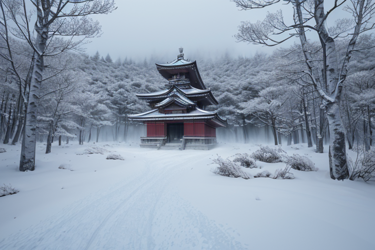
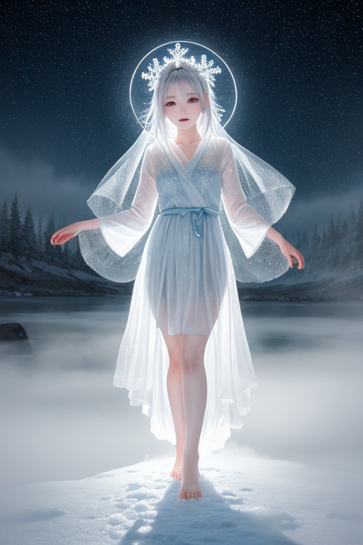
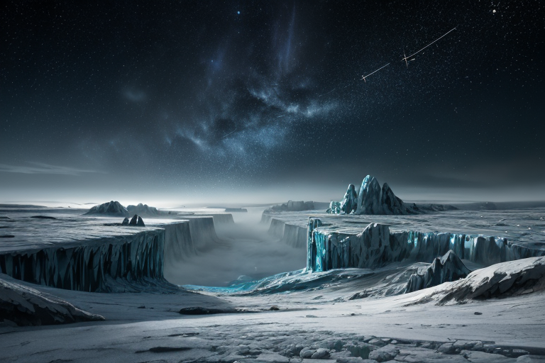
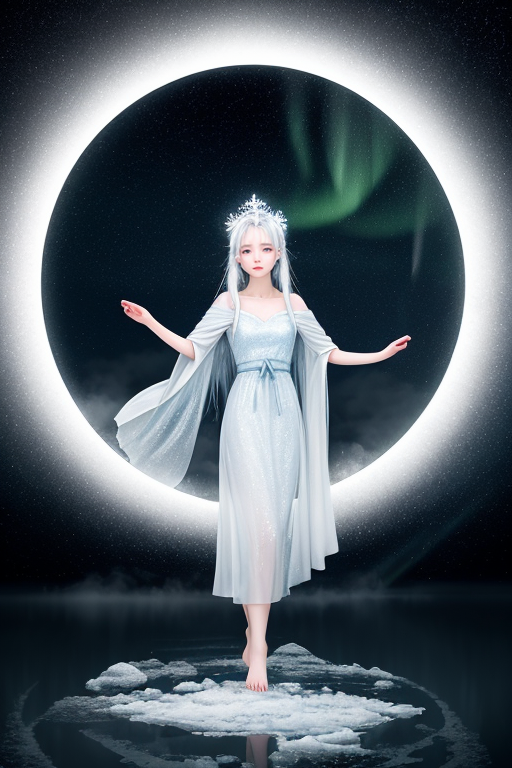
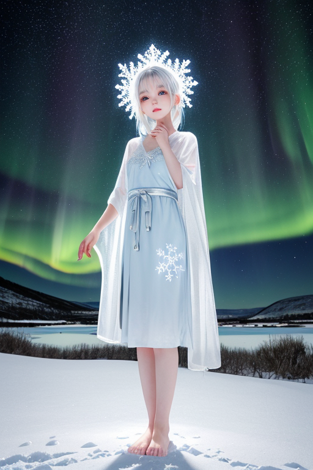

第一章 現実の北海道
あなたはまだ気づいていない。この土地にも、王がいることを。
摩周湖の霧は、世界を白く塗りつぶす。訪れる者の視界を奪い、湖面さえ見せない。それは、あまりにも広すぎるこの土地が、自らを守るために張った最初の結界だ。富良野のラベンダー畑は、夏の一瞬だけ紫色の絨毯を広げるが、その周囲を囲むのは、冬には何もない、果てしない雪原である。小樽運河の石造り倉庫群は、かつての賑わいを静かに伝えるが、その石の一つ一つが、長く厳しい季節の沈黙を記憶している。
ここでは、距離が人を孤独にする。次の町まで車で数時間。白樺林が延々と続き、その向こうにはさらに何もない空間が広がる。ジンギスカンの煙も、旭山動物園の歓声も、この広さの前では、小さな、愛おしい営みでしかない。蝦夷地開拓という歴史の転換点も、五稜郭に散った志士たちの想いも、この大地に飲み込まれ、静かな地層の一部となった。
広さは、時に優しさであり、時に残酷な圧力である。あなたは、この広さに耐えられるか。その問いが、凍てつく空気のように、この土地には満ちている。

第二章 歪みの兆候
摩周湖の霧は、いつもより濃く、深かった。透明度世界一を謳う湖水は、その日、厚い灰色のベールに覆われ、鏡のような水面を見せなかった。それは単なる天候の変化ではない。フロストリンが無言で王の傍らに跪き、銀色の睫毛に氷の結晶を宿す時、ノルディア・エルムは理解した。地脈の圧が、一点に集中し始めている。
小樽運河の石畳を、目に見えぬ微かな振動が伝う。ガラス細工の器が、ほんの一ミリ、棚の端へと移動する。富良野のラベンダーは、規定された向きとは異なる方向に、かすかに傾いている。些細な、誰も気にとめないほどの歪みの集合。それは、長きに渡り氷結界によって封じられてきた広大な地殻のエネルギーが、その「広さ」ゆえに一点の封印では抑えきれなくなっている兆候だった。
王は函館山の頂に立ち、眼下の街明かりを見下ろした。人間たちの営みは、あまりに小さく、脆い。広さは圧力となる。この圧力が、結界に亀裂を走らせようとしている。彼は何も語らなかった。ただ、銀色の瞳で、歪みの行方を追う。耐えること。それが、この土地を守る者の、唯一の作法であった。

第三章 王の葛藤
摩周湖の霧は、今日も深く、湖面を完全に隠していた。見えない。その広さを、その深さを、直接視認できない状態が、かえって王の内側に重くのしかかる。結界の亀裂は、地殻の「広さ」そのものが生み出す圧力の表れだ。歪みを微調整するだけでは、いつか限界が来る。封印を強化し、この広大なエネルギーを永遠に閉じ込め続けるべきか。それとも、一部を解放し、制御された形で地脈に還すべきか。
彼は長い間、霧の彼方を見つめていた。解放は危険を伴う。しかし、耐え続けることだけが正解なのか。彼の胸中に、初めて「迷い」という感情の波紋が広がった。それは、この土地の人間たちが、厳しい自然と向き合い、時に妥協し、時に抗いながら生きる姿を見てきたからかもしれない。無言で傍らに立つフロストリンが、微かに氷の結晶を震わせた。主君の心の揺らぎを、忠実な妖精は敏感に察知していた。

第四章 妖精との対話
摩周湖の霧は、いつもより濃く、深かった。王は岸辺に立ち、鏡のような水面を見下ろしていた。彼の傍らで、フロストリンが静かに口を開いた。その声は、氷が割れるような、かすれた響きだった。
「この湖の底には、かつての『歪み』が眠っています」
開拓期、この土地と激しく衝突した人々の、押し殺された悲しみと怒り。それは地脈に染み込み、時折、不気味な静寂としてこの湖を支配する。王たちはそれを「凍結」した。完全な浄化ではなく、氷結界による封印。広大な土地ゆえ、一点に集中する歪みはあまりに巨大だった。処理ではなく、隔離。それが、この王国の孤独な使命であった。
「耐えること。それが我々の役割です」
フロストリンの言葉に、王はゆっくりとうなずいた。広さに耐えるとは、逃げ場のない現実と対峙し続けること。彼は、五稜郭に散った者たちの無念も、厳寒に挑む開拓者の焦燥も、すべてこの大地が飲み込んできたことを知っていた。妖精は主君の横顔を見つめ、囁くように付け加えた。
「しかし、主よ。耐えるだけが、果たして守ることなのでしょうか」
湖面の霧が、微かに渦を巻いた。

第五章 微調整と余韻
摩周湖の霧は、王の意志に従い、静かに収束していった。地脈の歪みは、氷結界を張り直すことで一時的に封じ込められた。富良野のラベンダー畑の下、小樽の運河の底、函館山の地肌──フロストリンが分散させた圧力は、目に見えない亀裂を埋める微細な氷の結晶となって定着する。オーロリアが夜空に放つ極光は、人々の胸に忍び寄る過剰な孤独感を、ほのかな憧憬へと緩やかに変えていく。これが、彼らの「守り」のすべてだ。巨大な力に抗うのではなく、ほんの少し、ほんの一瞬、現実の歯車をずらす。
しかし、王は知っていた。この調整の代償を。広大な地脈の歪みを自らの結界で受け止めることは、彼自身の存在を、ゆっくりとこの大地に同化させていくことに等しい。やがて彼は、北海道という広さそのものになるのだろう。かつてアイヌの人々が森羅万象に神を見たように。
彼は、雪原に佇む一頭のオオカミを見つめた。旭山動物園の柵の向こうで、遠くを見つめるその瞳に、自身の未来を重ねる。孤独とは、守るべき全てと一体になること。彼は、その広さに、耐え続けることを選んだ。
あなたの町にも、王がいる。